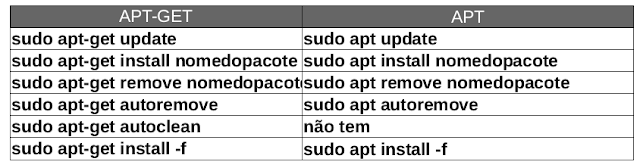

O comando ls é usado para listar arquivos nos sistemas Unix (Linux, OS X, BSD).
Ele tem algumas opções, como essas:
| Opções | Significado |
|---|---|
| -a | Mostra todos os arquivos, incluindo os ocultos |
| -A | Idem -a, mas não mostra os diretórios corrente ou pai |
| -i | Mostra o número do inode de cada arquivo na primeira coluna |
| -l | Formato longo, mostra permissões, números de links, proprietário, grupo, tamanho, dada de modificação e nome do arquivo. |
| -m | Arquivos listados em sequência, separados por vírgula |
| -n | Idem ao -l, porém mostra UID e GID em vez de nomes de proprietário |
| -o | Idem ao -l, porém não mostra o grupo do arquivo |
| -p | Mostra uma barra na frente de nomes de diretórios |
| -r | Ordem reversa |
| -h | Mostra o tamanho em formato legível por humanos, combinado com -l |
Primeiro, abra o terminal e digite pwd para mostrar qual diretório está atualmente, vá ao diretório home digitando cd ~/, e veja o conteúdo com ls -l.
As primeiras letras (com vários d, r, w, x e etc.). são os códigos das permissões. A sintaxe seria algo assim:
| Permissões | Links | Proprietário | Grupo | Tamanho | Data e Hora | Nome do Arquivo/Diretório |
|---|---|---|---|---|---|---|
| drwxr-xr-x | 1 | admin | Administrador | 4096 | Set 22 10:08 | temp |
E os significados da primeira letra, d pra diretório, - para arquivo comum, c para arquivo de caractere, b para arquivo de bloco e l para link.
No exemplo acima, drwxr-xr-x, a sintaxe seria essa:
| Tipo | Proprietário | Grupo | Outros |
|---|---|---|---|
| d | rwx | r-x | r-x |
Essas configurações de grupos são para dar permissões de grupo para determinados dos usuários, se ele não é proprietário ou não estar no mesmo grupo, ele estará em outros.
Os níveis de permissões são Proprietário, Grupo e Outros.
No caso de permissões, os significados são r para leitura, w para escrita (gravação), x para execução e - quando é sem permissão.
Para alterarmos permissões de acesso à arquivos e diretórios, usamos o comando chmod.
Existe dois modos mais usados, o literal e o octal, no caso, usaremos o octal, a sintaxe seria algo tipo chmod 777 nomedoarquivo.
As permissões atribuídas com números é essa:
421Lembre-se que existe uma ordem correta para aplicar as permissões, que são leitura, gravação e execução (rwx). Quando a permissão está ligada, será representada com 1 e desligada com 0.
Se temos a opção rwx, a permissão em binário é 111. Se for --x é 001 (em octal 1), se for -w- é 010 (em octal 2), se for r-- é 100 (em octal 4).
Por esse motivo acima, a representação dos números é feita da forma da tabelinha, e por termos oito combinações, é usado o modo octal.
Para chegar ao número octal, também podemos fazer a conta diretamente, rwx (111) seria 4 + 2 + 1 (que seria 7 em octal), rw- seria 4 + 2 + 0 (6 em octal), r-- seria apenas o 4 em octal, etc.
Essa é a tabelinha completa:
| Permissões | Binário | Octal |
|---|---|---|
| --- | 000 | 0 |
| --x | 001 | 1 |
| -w- | 010 | 2 |
| -wx | 011 | 3 |
| r-- | 100 | 4 |
| r-x | 101 | 5 |
| rw- | 110 | 6 |
| rwx | 111 | 7 |
No exemplo, usaremos rwxrw-rw- para definirmos as permissões para o proprietário, para o grupo e para os outros.
Em binário, ficaria 111 110 110 (766 em octal).
Em outro exemplo, com rw-r----- ficaria 110 100 000 (640 em octal), que é leitura e gravação pro proprietário, leitura pro grupo e sem permissões para os outros.
Vamos na prática, crie um arquivo de teste em qualquer pasta, e na pasta designada, digite o comando ls -l teste.txt para ver as permissões. Para alterá-las, use a base octal, por exemplo chmod 770 teste.txt (deverá ser usado como administrador, com o comando sudo antes).
PS: Para alterar permissões recursivamente, como as de diretórios e seus arquivos, adicione o parâmetro -R, como por exemplo sudo chmod -R 755 /var/www.
Cada arquivo (e diretório) tem um proprietário individual, geralmente o usuário que o criou, e um grupo com o qual é associado, o "grupo do arquivo".
Cada grupo pode ter diversos usuários como membros, o que combinado com o conceito de proprietário dos arquivos nos permite fornecer três camadas para controle de acesso aos arquivos e diretórios: usuário proprietário do arquivo, grupo do arquivo, e todos os demais usuários, os "outros".
Podemos verificar quem é o proprietário de um arquivo ou diretório e seu grupo padrão usando o comando ls com a opção de listagem longa (-l):
ls -l
Observe que as pastas e arquivos mostram a propriedade do usuário, e o grupo associado, além das permissões, tamanho, etc.
Podemos alterar o proprietário de um arquivo usando o comando chown (change owner). Somente o usuário root pode efetuar essa alteração.
Essa é a sintaxe: chown opcoes novoproprietario:novogrupo nomedosarquivos.
Por exemplo:
sudo chown novoprop:novogrup arquivo
Veja que o comando chown também permite alterar o grupo associado dos arquivos indicados.
Há poucas opções disponíveis para o comando chown, mas uma das mais úteis é a opção -R ou --recursive, que permite alterar a propriedade do arquivo em uma árvore de diretórios inteira.
Crie um novo usuário usando o comando sudo useradd nomedouser e dê privilégios de root pra ele com sudo usermod -aG sudo nomedouser.
Tomemos como exemplo o diretório planilhas que contém 5 arquivos de planilhas, todas pertencentes ao mesmo usuário:
ls -l
sudo chown -R nomedouser ./planilhas
Se um usuário for removido, os arquivos dos quais esse usuário era proprietário se mantém no sistema, e no lugar do nome do proprietário aparecerá ou UID que o usuário possuía. Por exemplo, vamos excluir o usuário com o comando sudo userdel -f nomedouser, seu grupo com sudo groupdel nomedouser e depois verificar como ficou a posse de seus arquivos:
Para alterar apenas o grupo de um arquivo usaremos o comando chgrp, que pode ser executado pelo root (sempre) ou por um usuário comum (desde que o grupo seja alterado para um grupo ao qual o usuário pertença). A sintaxe é chgrp novogrupo arquivos. As opções do comando chgrp são similares às do comando chown, como por exemplo a opção -R (--recursive).
Vamos alterar o grupo do arquivo planilha-01 para o grupo marketing com o comando chgrp:
sudo chgrp marketing planilha-01
O APT é um sistema de software que permite o gerenciamento de pacotes de software em distribuições Debian GNU/Linux e seus derivados, como o Ubuntu e Mint.
Ele contém uma série de ferramentas utilizadas no gerenciamento dos pacotes, permitindo realizar tarefas como instalação e remoção de pacotes e atualização do sistema
O APT usa um arquivo que lista as fontes de onde ele obterá os pacotes. Esse arquivo é o /etc/apt/sources.list, as entradas desse arquivo normalmente são formadas assim:
deb http://host/ distribuição seção1 seção2 seção3
deb-src http://host/ distribuição seção1 seção2 seção3
Onde: deb e deb-src indicam o tipo de repositório: se ele armazena pacotes binários (deb), ou seja, pacotes pré-compilados prontos para instalação, ou se guarda pacotes fonte (deb-src), que são o código-fonte original do programa.
Sempre que esse arquivo for modificado, deve-se rodar o comando apt-get update logo após. Isso deve ser feito para que o APT obtenha as listas de pacotes atualizadas das fontes especificadas.
Podemos utilizar CDs ou DVDs como repositórios de pacotes do sistema. Para isso, insira o cd ou dvd da distribuição no drive, e emita o comando a seguir:
sudo apt-cdrom add
sudo apt-get update
Agora o conteúdo do CD/DVD também está indexado no sistema, e seus pacotes podem ser instalados por meio do comando apt-get install. na seção seguinte, vamos listar essa e outras opções desse comando.
O utilitário apt-get permite a manipulação de pacotes do APT a partir da linha de comandos. É uma espécie de back-end para outras ferramentas que usam a biblioteca APT. O apt-get pode ser acessado por meio de interfaces front-end, como o aptitude, synaptic e wajig. Porém, neste tutorial, estamos interessado no uso direto da ferramenta no terminal.
A seguir temos as principais opções utilizadas com o comando apt-get:
Instalar pacotes especificados:
sudo apt-get install nomedospacotes
Remover os pacotes especificados:
sudo apt-get remove nomedopacote
Remover os pacotes especificados, incluindo seus arquivos de configuração:
sudo apt-get --purge remove nomedopacote
Atualizar os pacotes instalados no sistema:
sudo apt-get upgrade
Atualizar a lista de pacotes dos repositórios:
sudo apt-get update
Atualizar a distribuição para a versão mais recente do kernel:
sudo apt-get -u dist-upgrade
Verificar a lista de dependêncas quebradas e corrigí-las:
apt-get -f install
Excluir todos os pacotes que foram baixados e já instalados:
sudo apt-get clean
Apagar todos os pacotes que não possam mais ser baixados:
sudo apt-get autoclean
Remover pacotes órfãos (pacote sem utilidades e dependências de arquivos removidos):
sudo apt-get autoremove
Baixar arquivos sem instalar:
sudo apt-get -d install nomedoaplicativo
Temos também, em algumas distros linux, a simplificação apenas com apt, com algumas diferenças, veja um comparativo rápido disso:
